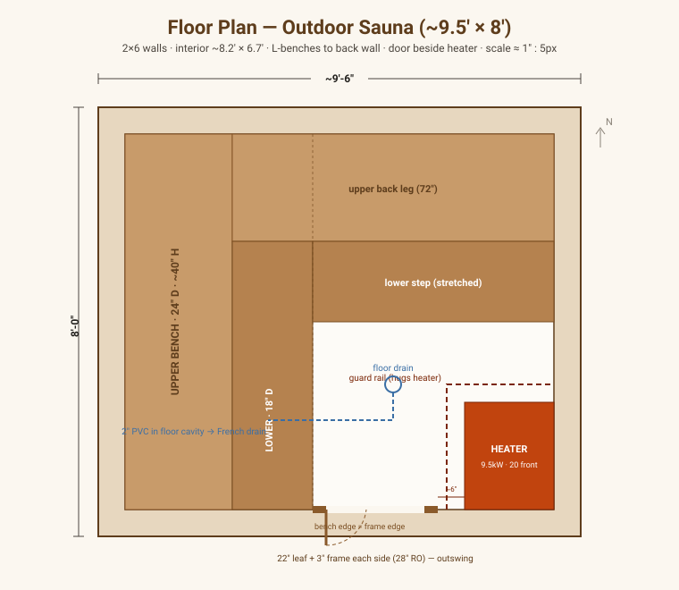
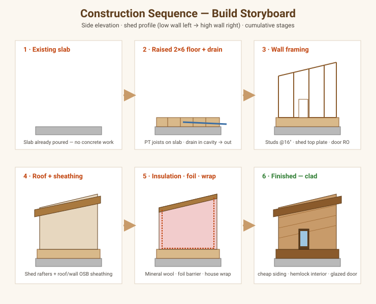

Overview
The visual plan set for the sauna: a floor plan, a cross-section (showing the wall assembly and how the parts stack up), and a phased construction-sequence storyboard showing the structure at each point of the build. Each drawing links out to the design doc and material list behind it.
Note: Drawings are schematic but dimensionally proportioned — they communicate layout and assembly, not shop-level precision. Confirm exact dimensions on site against the existing slab. They’re editable SVGs in
docs/assets/images/.
Floor plan

L-shaped benches wrap the back-left corner; the heater sits in the front-right corner with a guard rail hugging its two exposed faces; the glazed door (large lite) is on the front wall between the lower bench and the heater; the back wall is solid (rear window removed); and the floor drain runs to the French drain. The front/back walls are ~9.5 ft (extra width offsets the deeper 2×6 walls) so the door fits beside the heater (interior ~8.2′ × 6.7′). Walls/ceiling are hemlock, benches cedar.
Behind this drawing:
- Dimensions & bench layout → Dimensions & Layout
- Bench geometry + wood takeoff → Benches & Interior
- Heater placement & clearances → Electrical & Heater
Cross-section & wall assembly

The section shows the shed-roof rise (8′ → 9.5′), the raised 2×6 floor with the drain cavity, the two bench tiers at height, and — along the bottom — the full interior-to-exterior wall assembly (cedar → air gap → foil → mineral wool/2×4 → sheathing/wrap → cedar siding).
Behind this drawing:
- Wall assembly & barrier → Insulation & Vapor Barrier
- Framing & roof → Framing
- Raised floor & drainage → Foundation & Base
- Interior wood & grade → Interior Cladding
Construction sequence

Six cumulative stages — from the existing slab to the finished cedar-clad structure. This maps directly onto the phased Build Guide:
| Stage | Drawing shows | Design doc | Build phase |
|---|---|---|---|
| 1 | Existing slab | Foundation & Base | Phase 0–1 |
| 2 | Raised 2×6 floor + drain | Foundation & Base | Phase 1 |
| 3 | Wall framing | Framing | Phase 2 |
| 4 | Roof + sheathing | Framing | Phase 2 |
| 5 | Insulation · foil · wrap | Insulation & Vapor Barrier | Phase 4 |
| 6 | Hemlock cladding + siding + door (large lite) | Interior Cladding | Phase 5, 7 |
Bench construction

Section, plan, and slat detail for the two-tier L benches: a hidden 2×4 under-frame clad with clear VG Western Red Cedar slats on the seat tops and the upper bench front apron (lower front left open), fastened from behind so no hot screw heads touch skin. Full breakdown + wood takeoff in Benches & Interior.
Everything, linked (the full index)
Design documents
- Dimensions & Layout
- Foundation & Base
- Framing
- Insulation & Vapor Barrier
- Interior Cladding
- Benches & Interior
- Electrical & Heater
- Ventilation
Lists & estimates
Research
Open items
- [ ] Confirm interior ceiling height over the benches (target ~7′ for good heat).
- [ ] Verify final slab dimensions and square before cutting framing.
- [ ] Add an elevation drawing (front + high-side) if useful for siding layout.